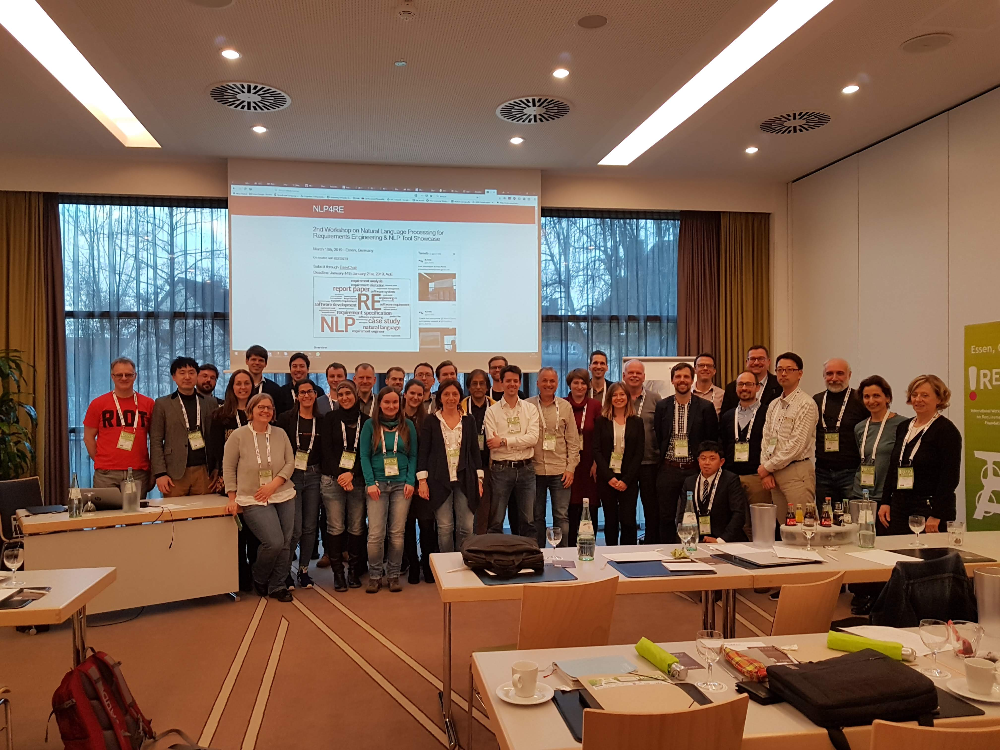

2nd Workshop on Natural Language Processing for Requirements Engineering & NLP Tool Showcase
March 18th, 2019 - Essen, Germany
Co-located with REFSQ'19
Submit through EasyChair
Deadline: January 14th January 21st, 2019, AoE

Overview
Natural language processing (NLP) has played an important role in several computer science areas, and requirements engineering (RE) is not an exception. In the last years, the advent of massive and very heterogeneous natural language (NL) RE-relevant sources, like tweets and app reviews, has attracted even more interest from the RE community.
The main goal of the NLP4RE workshop is to set up a regular meeting point for the researchers on NLP technologies in RE in which the advances, challenges and barriers that they encounter may be communicated, and collaborations may emerge naturally.
This year, the workshop will include a showcase of industrial NLP tools for RE, in which different tool vendors will provide demos of their tools to the attendees.
Contributions
The workshop will welcome contributions in the field of theory and application of NLP technologies in RE. We also encourage contributions that highlight challenges faced by industrial practitioners when dealing with requirements expressed in NL, and faced by academics in technology transfer studies.
We are particularly interested in Tool Papers (see the call for papers here), in which the authors provide a brief description of an NLP tool for RE, and a plan for a tool demo at the workshop. The authors can submit papers also about tools that have been previously presented in other venues. The demo of these tools will complement the showcase of industrial tools.
We are also interested in Report Papers (see the call for papers here), in which the authors provide an overview on the current and past research of their teams. These contributions do not require novelty with respect to previous work, because the main goal of the workshop is to foster discussion and networking. A non-mandatory template for Report Papers can be dowloaded here.
Within the area of NLP for RE, the topics of interest of the workshop include but are not limited to:
- Requirements quality assessment
- App Review analysis and classification
- Tweet mining and analysis for RE
- Bug report mining and analysis for RE
- Automated requirements management
- Multi-modal requirements analysis
- Ambiguity and defect detection in requirements
- Requirements tracing
- Requirements retrieval
- Domain-specific ontology learning
- Functional and non-functional requirements categorisation
- Model synthesis from requirements
- Information extraction (abstraction identification, feature extraction)
- Formalisation of informal requirements
- Question-answering systems for RE
- Discourse analysis for RE
- Argumentation for RE
- Summarisation of requirements documents
- Structure assessment for requirements documents
- Completeness assessment for requirements documents
- Speech-to-text and speech analysis in requirements elicitation
- Requirements datasets
NLP4RE is co-located with the 25th International Working Conference on Requirements Engineering: Foundation for Software Quality (REFSQ'19), Essen, Germany, 18-21 March, 2019.